Le projet de fin d’études Concert papier réinvestit les principaux questionnements de mon mémoire, autour de la conception d’objets éditoriaux : Comment les aspects fonctionnels, techniques et esthétiques de la conception d’un objet éditorial peuvent-ils être influencés par des normes et des standards ? Comment le designer arrive à s’en émanciper ou à s’y adapter dans le but de faire dialoguer au mieux fond et forme de l’objet éditorial ? Ce projet auto-initié propose un objet éditorial non-standard qui incarne le récit cinématographique et musical du concert-audio de l’auteur-compositeur-interprète Ben Mazué. C’est une sorte de produit dérivé où j’interprète le film imaginé, raconté et chanté par ce dernier. Cette appropriation personnelle se traduit au travers de mes choix techniques et esthétiques éditoriaux faisant sens avec le fond. Mon projet de fin d’études s’oriente ainsi vers un croisement de ses trois disciplines : graphisme, cinéma et musique. Ce croisement se base à partir de l’audio du concert La princesse et le dictateur de Ben Mazué. Durant cet événement, celui-ci raconte le film qu’il a imaginé, jonglant entre narration et musiques. Le projet se l’approprie en proposant une forme éditoriale non-standard, basée sur des caractéristiques cinématographiques et musicales.
 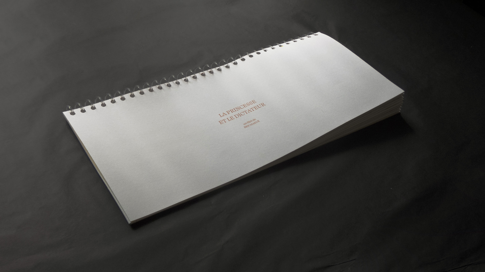
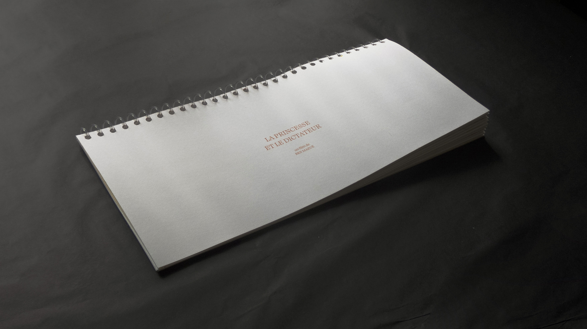
 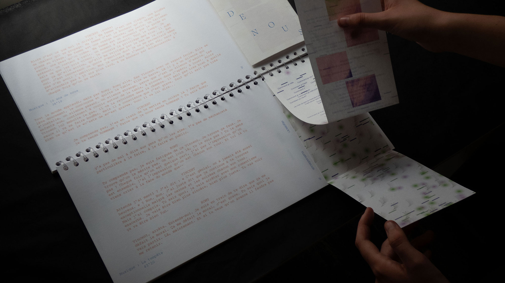
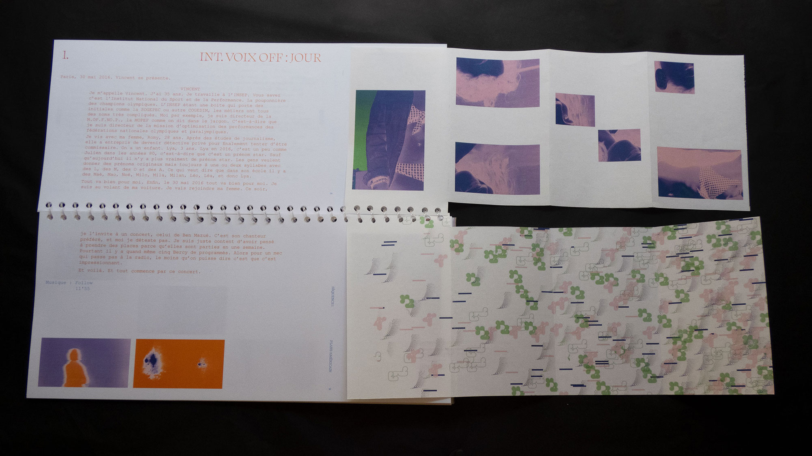
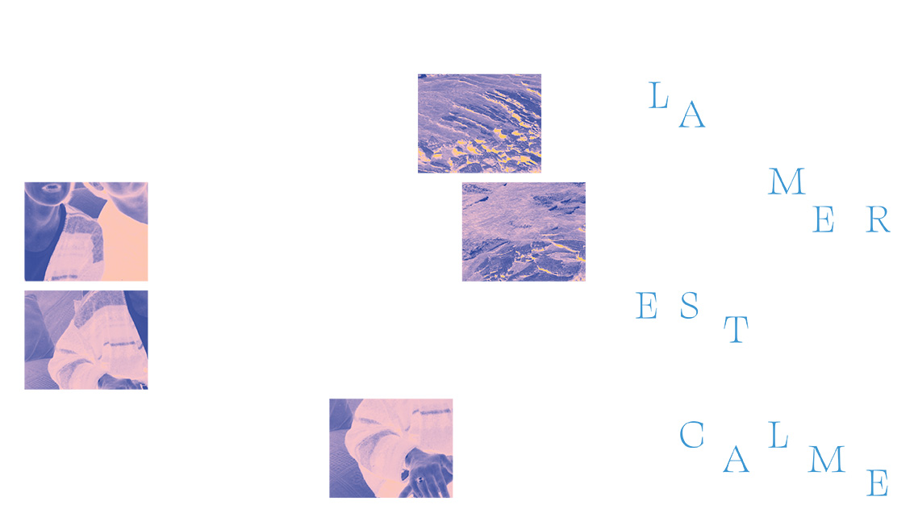
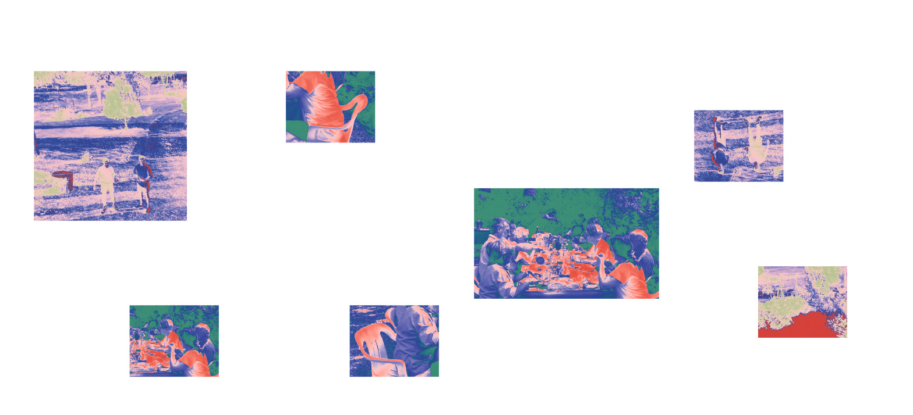
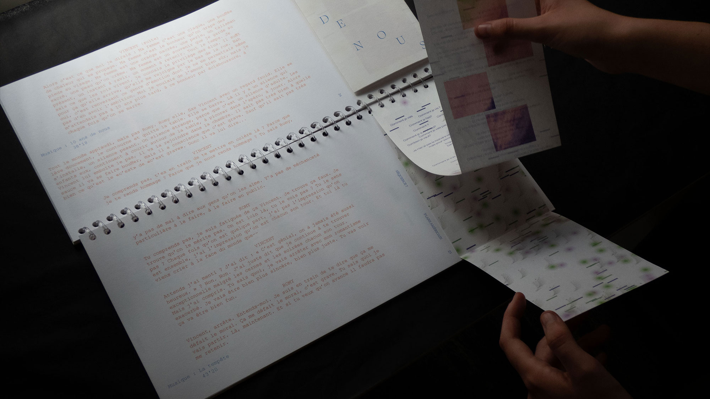
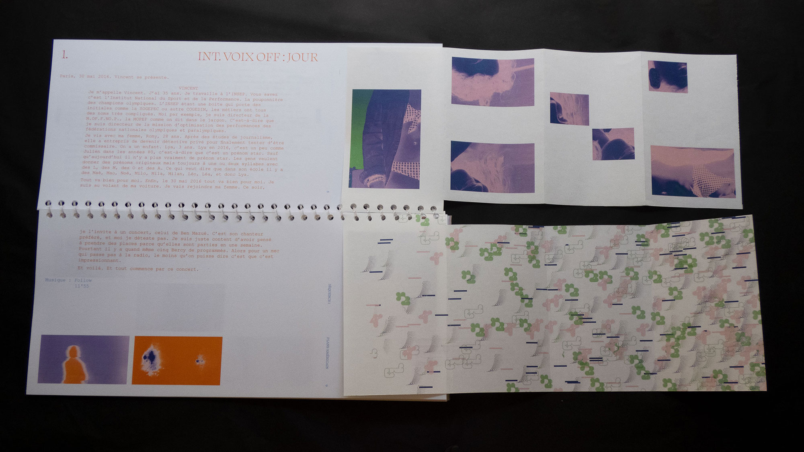
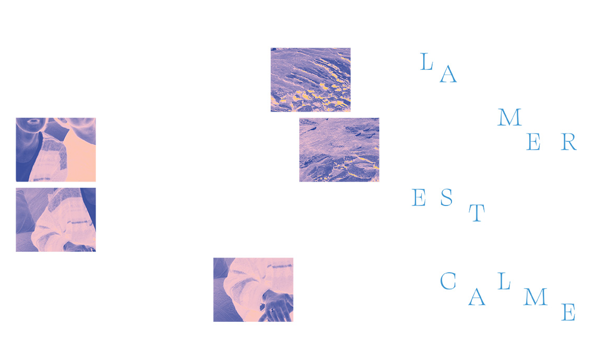
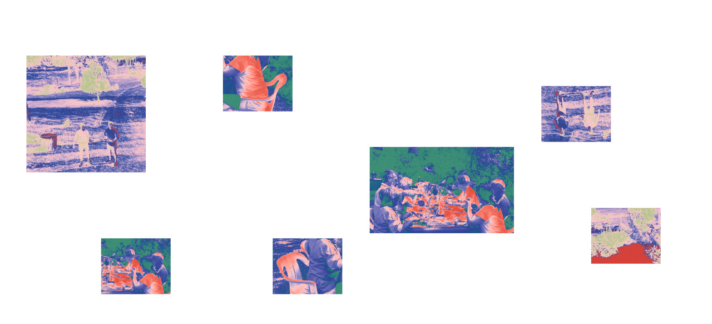
